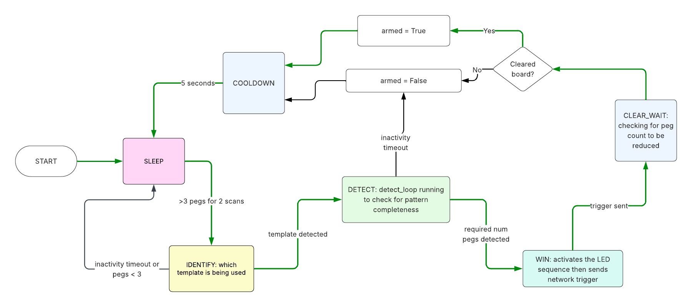

Illumination Lite-Rite
Summer 2026
CONTEXT
Lite-brite: a toy that consists of a light box and pegs. Small coloured pegs are inserted into the box and become black lit. Templates are provided with the toy, and the user fills them out to create a glowing picture.
Technical explanations will be in black. Artistic explanations will be in blue.
WHAT IS IT
Illumination Lite-Rite is a technical art installation that uses a raspberry pi, infrared light, and a camera to achieve automated pattern detection from inside of a lite-brite.
Illumination Lite-Rite plays on two themes: ancient alien technology and rituals. Across space and time, beings have always searched for meaning in the mundane. This often manifests in interesting ways - the mating calls of birds, the courtship displays between potential lovers, the burial rituals of elephants. For those looking from outside, these rituals can appear unusual and even absurd. Meaning is what you make of it. This art piece plays on that idea by requiring participants to complete the "ritual" of building one of four patterns (sigils) in the lite-brite and rewards them with a recording based off of the sigil chosen.
This install is a part of a larger art experience that was commissioned by an art festival. A transmission recording device prompted participants to record wisdom or advice that they wanted to transmit, categorized by the four sigils. Upon successfully completing the Lite-Rite ritual, a random recording from that sigil is played.
MY ROLE
I led the creation of the transmission recording to playback experience, leading a team of four other engineers to build the transmission recorder and other playback installations. I personally worked on this Lite-Rite install.
HOW IT WORKED
Final hardware design overview:
Design highlights:
- I made the decision early on to use IR light and a camera to achieve peg detection. A filled peg hole would reflect the IR light from the strip back into the camera. An unfilled hole would not. I reasoned that using IR light would remove any ambient room "noise" and improve my signal.
- Background image subtraction: a concern of mine was that any background IR light would be detected and cause false positives. By flashing the IR light and subtracting the two images, any background light should be subtracted (as it would be consistent between the two images). Considering this, I chose to use a 940 nm wavelength LED strip, as that wavelength is not visible to the human eye.
- Camera: I used the raspberry pi module camera 3, specifically the model with infrared and ultra wide angle field of view.
- Lite-brite pegs: I sanded the tips of the pegs to improve the reflection of IR light and make them more visible to the camera.

Detection system:
I designed the detection system - the state machine architecture, calibration methods, and IR sensing strategy. Python implementation was done with Claude Code under my direction.

Illumination Lite-Rite runs a six-state supervisor (auto_loop) layered on top of a continuous IR differential detector.
SLEEP — Coarse IR scan every 4s to check for any activity. Wakes to IDENTIFY once 3+ pegs are detected and 65% of those pegs belong to the same candidate template.
IDENTIFY — Faster polling (every second). This state is for the machine to identify which template is being used. Locking onto a template requires passing two conditions: most of the pegs belong to the suspected template and at least three pegs belong only to the suspected template and not to the runner up. Continued progress resets an inactivity timer, so participants filling out a region shared between templates does not time out before getting to the disambiguating pegs. Upon detection, the RGB strip is set to white.
DETECT — Running the detect_loop. Uses the fine-grain peg detecting features: IR image subtraction, parallax-correction, adaptive thresholds, etc (covered in more detail in the next section). Requires 10 consecutive matching frames before declaring a win.
WIN — Fun success LED sequence is played. The pi then sends a HTTP POST request to another computer on the same LAN that handles playing the recordings. A variable called armed is set to false here, meaning the board is full of pegs.
CLEAR_WAIT — Polls every second for the peg count to lower (meaning the board is being reset) or for an inactivity timeout. If the board is cleared the armed variable is set to true. If not, it remains false.
COOLDOWN — A 5 second cooldown state before returning to SLEEP.
Detecting pegs:
Figuring out how to detect the pegs was a fun challenge. A few different strategies were used simultaneously.
Background image subtraction through IR differencing: covered in the hardware features section.
Parallax-corrected MAX-window search: The physical camera position was constrained by the lite-brite housing such that the camera and grid were about 15cm away from each other. This meant that the pegs further away from the center came in at an angle from the camera's field of view. Rather than taking pixel values only at the hole location, a small radius around the hole node point was taken and scanned for the maximum brightness value found.
Adaptive per-hole thresholds: The IR strip unevenly lights the grid, meaning some spots are overexposed and some are underexposed. Each hole's threshold is computed from its local background. The IR differential readings of nearby holes are taken and the 30th percentile (plus a margin) is taken as the filled-hole-threshold.
Hysteresis debounce: There are different thresholds for a hole to read as filled or unfilled. A higher threshold is required to flip a filled hole back to an unfilled one. This prevents rapid state toggling for holes/pegs that are at the boundary.
Template creation:
I took the measurements of the grid of my lite-brite and used Claude Code to create a .svg template generator that took png vector image inputs and mapped them to the grid. I laser cut the four sigil templates out of plywood at Noisebridge.
DEMO
OUTCOME
Learned a lot and had a lot of fun. I ended up reducing the amount of pegs required to get a WIN condition as participants were not patient enough to complete the whole template. This was an improvement based on user feedback.
CREDITS
Nathan, engineering consulting and general creative and technical support. Graydon, led the sound output of the experience. Tatyana, overall project lead. Paul, transmission recorder. Tim, electronic resources and networking specialist. Richard, technical consultant.